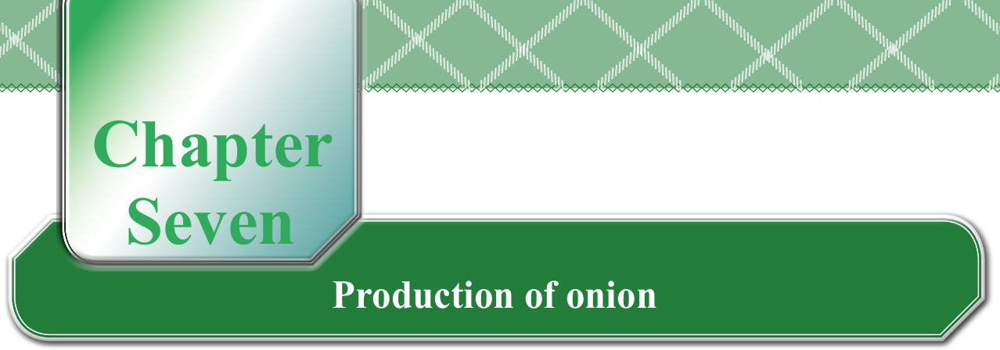
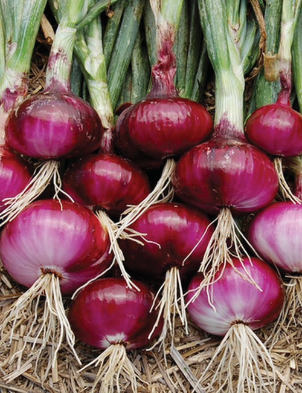
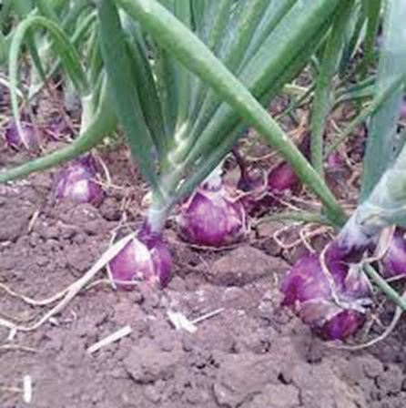
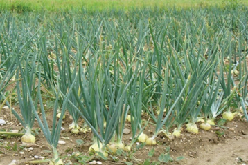
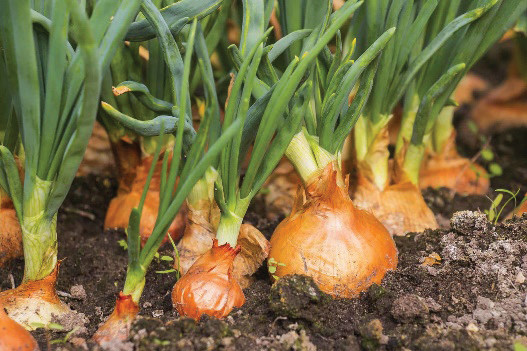

ChapterSevenProduction of onion
Getting started with onion production
An onion is a type of bulb vegetable. It has a short, underground stem with fleshy leaves at its base forming a bulb. This bulb stores food for the onion plant. Onion is usually a biennial crop, meaning that it takes two growing seasons to complete its lifecycle. In the first season, a seed grows into a plant with leaves and a bulb. Nutrients then build up in the bulb. In the second season, plant grows from the bulb, and produces flowers, and then seeds. Onion bulbs can be of different colours, such as red, white, and yellow. This is shown in Figures 7.1 (a) to (d).



